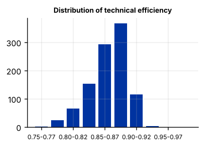

Run this model on your own data in Open Econometric Systems →
Step 1The question and the model
How far is each farm below the best practice, and how much of the gap is inefficiency rather than bad luck? Ordinary regression of output on inputs gives the average technology. A frontier gives the best: the output that a farm could reach with its inputs. The stochastic frontier model writes, in logarithms,
The term \(v_i\) is noise (weather, measurement error); \(u_i\) is inefficiency, which can only lower output. The two are told apart by the shape of the error: the sum \(v - u\) is skewed to the left when there is inefficiency. The common choices for \(u\) are a half-normal, an exponential or a truncated normal distribution. The efficiency of farm \(i\) is \(TE_i = e^{-u_i}\), the ratio of its output to the frontier output; it is estimated by its expectation given the composed residual (Jondrow et al. 1982; Battese and Coelli 1988).
How to write it: the model
We estimate a Cobb-Douglas stochastic production frontier for rice farms: the logarithm of gross output on the logarithms of land (hectares), seed, urea and total labour, with a half-normal inefficiency term, by maximum likelihood. We test for inefficiency with the skewness of the OLS residuals and a likelihood-ratio test against OLS, test constant returns to scale, compute the technical efficiency of each observation, and check the results against exponential and truncated-normal inefficiency, an extra input and a simulation.
Step 2Load the data
import numpy as np
import pandas as pd
import oes_engine as oes # pip install -e open-econometric-systems/oes-engine
d = pd.read_csv("ricefarms.csv")
print(len(d), "observations,", d.id.nunique(), "farms,", d.region.nunique(), "villages")
inputs = ["size", "seed", "urea", "totlabor"]
print(d[["goutput"] + inputs].agg(["mean", "median", "min", "max"]).round(1))
print("share of farm-years using no urea or no seed:", round(((d.urea == 0) | (d.seed == 0)).mean(), 3))1026 observations, 171 farms, 6 villages
goutput size seed urea totlabor
mean 1405.2 0.4 18.2 95.4 388.4
median 886.5 0.3 10.0 60.0 252.0
min 42.0 0.0 1.0 1.0 17.0
max 20960.0 5.3 1250.0 1250.0 4774.0
share of farm-years using no urea or no seed: 0.0How to read it
The data have 1,026 farm-year observations on 171 farms in six villages. Output is very skewed: the mean is 1,405 kg and the median 887 kg, with a maximum of 20,960 kg. Mean land is 0.4 hectares, mean seed 18.2 kg, urea 95.4 kg and labour 388 man-days. No farm-year has zero land, seed, urea or labour (the share with no urea or no seed is 0), so every input can be put in logarithms. Farms are small and similar, which matters below: a frontier is easier to see when firms differ a lot.
Step 3Estimate the frontier
spec = dict(y="goutput", x=inputs, group="region")
r = oes.run("sfa", d.to_csv(index=False), spec)
oes.summary(r)
oes.show(r, "Stochastic production frontier")
oes.show(r, "Variance decomposition")
oes.show(r, "Tests")Observations: 1026
Mean efficiency: 0.867
lambda: 0.552
Inefficiency share of the variance: 0.1
Log-likelihood: -398.47
Stochastic production frontier: half-normal inefficiency
Estimate s.e. z p
Parameter
Constant 4.9853 0.2634 18.9256 0.0
size 0.4410 0.0310 14.2220 0.0
seed 0.1688 0.0273 6.1816 0.0
urea 0.1902 0.0153 12.3938 0.0
totlabor 0.2365 0.0296 7.9867 0.0
ln sigma_v -1.0830 0.1079 -10.0330 NaN
ln sigma_u -1.6768 0.9596 -1.7474 NaN
Note: Maximum likelihood, 1026 observations; inputs and output in logarithms.
Variance decomposition
Value
Quantity
sigma_v (noise) 0.3386
sigma_u (inefficiency scale) 0.1870
lambda = sigma_u / sigma_v 0.5523
Share of the error variance due to inefficiency 0.0998
Mean inefficiency E[u] 0.1492
Log-likelihood -398.4730
Log-likelihood of OLS -398.5363
Tests
Statistic p-value Detail
Test
Skewness of the OLS residuals (Schmidt-Lin) -0.3384 0.3675 Expected negative: p is the one-sided probability of a value this low or lower
LR test of no inefficiency (against OLS) 0.1267 0.3609 Mixed chi-square (Coelli 1995); H0: sigma_u = 0
Constant returns to scale: sum of input elasticities = 1 (Wald) 7.5119 0.0061 sum = 1.036How to read it
The elasticities are 0.44 for land, 0.17 for seed, 0.19 for urea and 0.24 for labour, all with z statistics above 6. They sum to 1.04, and the Wald test rejects constant returns to scale (p = 0.006), but the departure is small. The error variance splits into noise with a standard deviation of 0.339 and inefficiency with a scale of 0.187: lambda is 0.55 and inefficiency accounts for about 10% of the error variance. The tests say that this is not distinguishable from zero. The skewness of the OLS residuals is -0.34 (p = 0.37, the sign is right but small), and the likelihood-ratio test of no inefficiency gives 0.13 (p = 0.36); the log-likelihood rises from -398.54 to -398.47 when the inefficiency term is added. The standard error of ln sigma_u is 0.96, against an estimate of -1.68: the inefficiency scale is poorly determined.
Step 4Technical efficiency
oes.show(r, "Technical efficiency")
oes.show(r, "Efficiency by region")
oes.plot(r)Technical efficiency (Battese-Coelli, E[exp(-u)|e])
Value
Statistic
Mean 0.8667
Standard deviation 0.0296
Minimum 0.7467
10th percentile 0.8248
25th percentile 0.8497
Median 0.8714
75th percentile 0.8877
90th percentile 0.9011
Maximum 0.9384
Share below 0.7 0.0000
Mean of exp(-E[u|e]) (Jondrow et al. 1982) 0.8620
Correlation of the two measures 1.0000
Note: Efficiency is the ratio of observed output to the frontier output (production) or of the frontier cost to observed cost (cost).
Efficiency by region
Observations Mean Median Minimum
region
ciwangi 216 0.8720 0.8775 0.7843
gunungwangi 222 0.8618 0.8668 0.7467
langan 144 0.8649 0.8743 0.7602
malausma 198 0.8634 0.8680 0.7838
sukaambit 132 0.8726 0.8778 0.7778
wargabinangun 114 0.8671 0.8733 0.7784
How to read it
Mean technical efficiency is 0.867, with a standard deviation of only 0.030: the least efficient farm-year is at 0.747 and the most efficient at 0.938, and no observation is below 0.7. The two efficiency measures (the Battese-Coelli ratio and \(\exp(-E[u|e])\)) have a correlation of 1.00. The villages look alike: the mean ranges from 0.862 (Gunungwangi) to 0.873 (Sukaambit). The histogram is concentrated between 0.82 and 0.92. Because the inefficiency term is so small relative to noise, the scores differ little from each other; they are the mean efficiency with a small adjustment for each farm's residual.
Step 5The distribution of inefficiency
oes.show(r, "Comparison of inefficiency distributions")
for dist in ("exponential", "truncated"):
rd = oes.run("sfa", d.to_csv(index=False), dict(spec, distribution=dist))
print("---", dist, ": mean efficiency", rd["summary"][1]["value"], ", lambda", rd["summary"][2]["value"], ", log-likelihood", rd["summary"][4]["value"])Comparison of inefficiency distributions
Log-likelihood Parameters AIC BIC Mean efficiency Elasticity of the first input
Distribution
Half-normal -398.4730 7 810.9460 845.4799 0.8667 0.4410
Exponential -398.5249 7 811.0497 845.5837 0.9481 0.4402
Truncated normal -398.4153 8 812.8306 852.2980 0.7617 0.4405
Note: The three models are not nested except the half-normal in the truncated normal; compare by AIC and BIC, and check how much the mean efficiency changes.
--- exponential : mean efficiency 0.948 , lambda 0.155 , log-likelihood -398.52
--- truncated : mean efficiency 0.762 , lambda 0.603 , log-likelihood -398.42How to read it
The three distributions fit equally well: the log-likelihoods are -398.47 (half-normal), -398.52 (exponential) and -398.42 (truncated normal), and the half-normal has the lowest AIC and BIC. The land elasticity hardly moves (0.441, 0.440, 0.441). The efficiency level does move, a lot: 0.867, 0.948 and 0.762. The data cannot say which shape is right, and the level of mean efficiency is a product of that assumption. Only the ranking of farms is robust. The conclusion: report the level with the distribution it comes from, and do not compare mean efficiencies across studies that assume different distributions.
Step 6Robustness: another input and the sample
d2 = d[d.phosphate > 0]
r2 = oes.run("sfa", d2.to_csv(index=False), dict(spec, x=inputs + ["phosphate"]))
print(len(d2), "observations with phosphate")
print([(row[0], round(row[1], 3)) for row in r2["tables"][0]["rows"][:6]])
print("mean efficiency", r2["summary"][1]["value"], ", inefficiency share", r2["summary"][3]["value"])
rc = oes.run("sfa", d.to_csv(index=False), dict(spec, x=["size", "seed", "urea"]))
print("without labour: elasticities", [(row[0], round(row[1], 3)) for row in rc["tables"][0]["rows"][:4]], ", mean efficiency", rc["summary"][1]["value"])883 observations with phosphate
[('Constant', 4.895), ('size', 0.375), ('seed', 0.164), ('urea', 0.209), ('totlabor', 0.172), ('phosphate', 0.128)]
mean efficiency 0.793 , inefficiency share 0.306
without labour: elasticities [('Constant', 6.401), ('size', 0.567), ('seed', 0.224), ('urea', 0.202)] , mean efficiency 0.782How to read it
An extra input. Phosphate is zero on many farm-years, so adding it (in logarithms) cuts the sample to 883 observations. The elasticities stay close (land 0.38, seed 0.16, urea 0.21, labour 0.17, phosphate 0.13) but the inefficiency share of the variance rises to 0.31 and mean efficiency falls to 0.79. The conclusion about the level of inefficiency is therefore as fragile to the sample and the specification as it was to the distribution. Leaving out labour raises the land elasticity to 0.57 and the seed elasticity to 0.22, and gives a mean efficiency of 0.78. An omitted input is absorbed into the elasticities of the correlated inputs and into the inefficiency term.
Step 7Diagnostics: does the estimator recover a known frontier?
rng = np.random.default_rng(1)
def sim(n, su, sv):
x1, x2 = rng.uniform(0, 2, n), rng.uniform(0, 2, n)
u = np.abs(rng.normal(0, su, n))
y = 1 + 0.5 * x1 + 0.3 * x2 + rng.normal(0, sv, n) - u
return pd.DataFrame(dict(y=y, x1=x1, x2=x2)), u
for su in (0.4, 0.0001):
s, u = sim(1500, su, 0.2)
rs = oes.run("sfa", s.to_csv(index=False), dict(y="y", x=["x1", "x2"], log="no"))
est = {row[0]: row[1] for row in rs["tables"][0]["rows"]}
te = {row[0]: row[1] for row in rs["tables"][3]["rows"]}
lr = [row for row in rs["tables"][2]["rows"] if row[0].startswith("LR")][0]
print(f"true sigma_u {su}: x1 {est['x1']:.3f} (0.5), x2 {est['x2']:.3f} (0.3), sigma_u {np.exp(est['ln sigma_u']):.3f}, sigma_v {np.exp(est['ln sigma_v']):.3f} (0.2); mean efficiency {te['Mean']:.3f} (true {np.exp(-u).mean():.3f}); LR p-value {lr[2]}")true sigma_u 0.4: x1 0.495 (0.5), x2 0.304 (0.3), sigma_u 0.414, sigma_v 0.200 (0.2); mean efficiency 0.740 (true 0.748); LR p-value 0.0 true sigma_u 0.0001: x1 0.499 (0.5), x2 0.293 (0.3), sigma_u 0.000, sigma_v 0.195 (0.2); mean efficiency 1.000 (true 1.000); LR p-value 0.5
How to read it
We simulate a frontier with elasticities 0.5 and 0.3, noise of 0.2 and half-normal inefficiency of scale 0.4, 1,500 observations. The estimates are 0.495 and 0.304 for the elasticities, 0.414 for sigma_u and 0.200 for sigma_v, and the mean efficiency is 0.740 against a true 0.748; the likelihood-ratio test rejects no inefficiency (p < 0.001). With no inefficiency (sigma_u essentially 0) the elasticities are 0.499 and 0.293, sigma_u is estimated at the boundary (0.000), the mean efficiency is 1.000 and the likelihood-ratio p-value is 0.50. When inefficiency is large enough relative to noise the model recovers it; the rice data look like the second case. The test suite also checks the likelihood against its closed form and the exponential case.
Step 8Write the results
How to write it: results
We estimate a Cobb-Douglas stochastic production frontier for 1,026 farm-year observations on Indonesian rice farms, with half-normal inefficiency, by maximum likelihood. The output elasticities are 0.44 for land, 0.17 for seed, 0.19 for urea and 0.24 for labour (all significant at 1%); they sum to 1.04, and constant returns are rejected (Wald p = 0.006) by a small margin. The estimated mean technical efficiency is 0.87 (range 0.75 to 0.94), but there is little evidence of inefficiency: the skewness of the OLS residuals is -0.34 (p = 0.37) and the likelihood-ratio test of no inefficiency does not reject (p = 0.36), with inefficiency accounting for 10% of the error variance. The level of efficiency depends on the assumed distribution (0.95 exponential, 0.87 half-normal, 0.76 truncated normal) and on the sample (0.79 when phosphate is added), so we report the ranking of farms and not the level. In a simulation with inefficiency of scale 0.4 the estimator recovers the elasticities within 0.01 and the mean efficiency within 0.01.
References. Aigner, Lovell and Schmidt (1977), Journal of Econometrics; Meeusen and van den Broeck (1977), International Economic Review; Jondrow, Lovell, Materov and Schmidt (1982), Journal of Econometrics; Battese and Coelli (1988), Journal of Econometrics; Coelli (1995), Journal of Productivity Analysis; Kumbhakar and Lovell (2000), Stochastic Frontier Analysis; Erwidodo (1990), Ecdat RiceFarms.